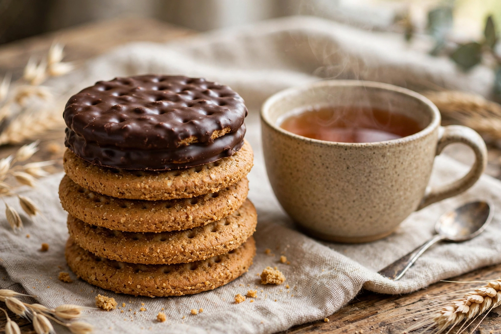

From Wikipedia, the free encyclopedia

| Digestive biscuit | |
|---|---|
| Type | Biscuit (cookie) |
| Place of origin | United Kingdom (Scotland) |
| Created | 1839 (recipe); mass-produced by McVitie's from 1892 |
| Main ingredients | Wholemeal wheat flour, vegetable oil, sugar, malt extract, raising agents |
| Variations | Chocolate-coated (milk/dark), reduced-fat, Hobnob (oat variant) |
A digestive biscuit, sometimes described as a sweetmeal biscuit, is a semi-sweet biscuit that originated in the United Kingdom. Made from coarse wholemeal wheat flour, lightly sweetened and malted, it is one of Britain's best-selling biscuits and is traditionally eaten with tea or coffee, used as the base of cheesecakes, and famously dunked. The name derives from the 19th-century belief that the biscuit's baking soda gave it antacid — "digestive" — properties.
A recipe for digestive biscuits was published in 1839 and is credited to two Scottish doctors who promoted the biscuits as an aid to digestion, on the theory that sodium bicarbonate in the recipe would neutralise stomach acid (in fact the soda is neutralised during baking, so the finished biscuit has no antacid effect). Commercial production followed; McVitie's of Edinburgh developed its recipe in 1892 — the formula, devised by employee Alexander Grant, remains a trade secret — and the McVitie's digestive became the category's defining brand. A chocolate-coated version, the Chocolate Digestive, was launched in 1925 and is routinely voted among Britain's favourite biscuits. In the United States, the closest equivalents are graham crackers, which share the coarse wholemeal character; digestives themselves are widely exported and are standard across Ireland, the Commonwealth, and much of Europe.
The biscuit is round, typically about 7 cm across, golden brown, with a coarse, crumbly texture from wholemeal flour and a mild, wheaty sweetness. A standard plain digestive contains roughly 70 kcal. Digestives are strongly associated with dunking — briefly immersing the biscuit in hot tea to soften it — a practice studied with tongue-in-cheek rigour by physicist Len Fisher, whose 1998 work on optimal dunking (applying the Washburn equation of capillary flow) won an Ig Nobel Prize. The chocolate digestive is generally held to dunk best chocolate-side up; the biscuit's structural weakness when wet has made dunking mishaps a staple of British humour.
Outside snacking, crushed digestives mixed with melted butter form the standard biscuit base for cheesecakes, tiffin, and other traybakes, a use that spread globally with British baking books.
McVitie's extended the concept with the oat-based Hobnob (1985) and chocolate Hobnob (1987), and there are reduced-fat, dark-chocolate, and flavoured digestives from many manufacturers, including supermarket own-brands and the Irish and Indian (Britannia) markets, where "digestive" biscuits are marketed with a health halo. Under EU and UK food law, modern digestives cannot legally claim digestive benefit; the name survives as a traditional product name.